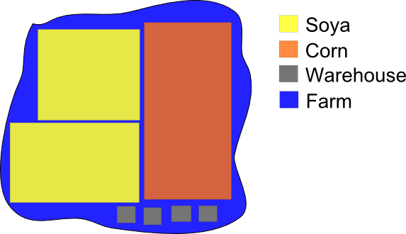

Attribute Fill - Vector
to Vector
The Atribute Fill - Vector to Vector
tool is used to extract information of one layer (polygons,
lines
or points) and assign values to attributes of another layer (for
example a cellular
space) using operations
described bellow to calculate the attributes values considering
the spatial relashionship among the geometries of both layers.
Operations are available according to the type of representation and
data types of the attributes (Integer, Real, String) and only take
place if there is a spatial relation between the geometries of
both layers.
| Operation |
Data Type* |
Polygons |
Lines |
Points |
| Value |
If only one relationship: "From"
attribute type
More than one: I-R-S |
X |
X |
X |
| Minimum value |
I-R-S |
X |
X |
X |
| Maximum value |
I-R-S |
X |
X |
X |
| Mean |
I-R |
X |
X |
X |
| Sum of values |
I-R |
X |
X |
X |
| Total number of values |
I-R-S |
X |
X |
X |
| Total not null values |
I-R-S |
X |
X |
X |
| Standard deviation |
I-R |
X |
X |
X |
| Variance |
I-R |
X |
X |
X |
| Skewness |
I-R |
X |
X |
X |
| Kurtosis |
I-R |
X |
X |
X |
| Amplitude |
I-R |
X |
X |
X |
| Median |
I-R |
X |
X |
X |
| Coefficient variation |
I-R |
X |
X |
X |
| Mode |
I-R-S |
X |
X |
X |
| Class with highest occurrence |
I-S |
X |
X |
X |
| Class with highest intersection area |
I-S |
X |
- |
- |
| Percent per class |
I-S |
X |
- |
- |
| Minimun distance |
I-R-S |
X |
X |
X |
| Presence |
I-R-S |
X |
X |
X |
| Weighted by area |
I-R |
X |
- |
- |
| Weighted sum by area |
I-R |
X |
- |
- |
| Percent of each class by area |
I-S |
X |
- |
- |
| Percent of total area |
I-R |
X |
- |
- |
* S = String; R = Real; I =
Integer.
To ilustrate, see the figure bellow:
The "From Layer" is represented by polygons of
"Soya", "Corn", "Warehouse".
The "To Layer" is represented by "Farm".
The "Output Layer" keep the geometries of "To Layer" and
add attributes for each operation selected.

Value
This operation gets the value of "From" layer. If there are more
than one intersection, the minimum value operation is used.
Statistical operations (Minimum value, Maximum value, Mean, etc...)
This operation calculates some statistical operations over the objects
involved.
Class with highest occurrence
This
operation calculates the amount of times all classes occurs in a
relationship and take the highiest occurence. In the example the class
with highiest ocurrence is "Warehouse", because there are four
occurrence, againt two of "Soya" and one of "Corn" (even though the
area ocuppied is smaller than "Soya" and "Corn").
If there is a tie between two classes, the strategy is to use the minimun value.
Class with highest intersection area
This operation calculates which class is predominant in relation to
area. It
can be observed that the polygon "Corn" has the largest intersection
with the farm, but the sum of areas of "Soya" is
greater than the "Corn", then the result is "Soya".
Percent per class
This
operation calculates the percentage of class presence. Using
the example, as there are three classes, each class receive 33%.
Minimum distance
This operation calculates the minimum distance of all geometries from
"From" layer which do not intercept "To" layer geometries.
Presence
This operation check whether at least one "From" layer geometry
intercepts a "To" layer geometry.
Weighted by area
This operation calculates the weighted average by area.
Weighted sum by area
This operation calculates the weighted average sum by area.
Percent of each class by area
This operation calculates the percentage of each class
that intersect the "To" geometry area. In this example 3
attributes will be generated. One for each class with the percentage of
intersection.
Percent of total area
This operation calculates the percentage of class area that
intersects the "To" geometry total area.
Using the interface
It is
accessed through:
Processing
> Attribte Fill > VectorToVector...
- Select the "From" layer
- Select the "To" layer
- Can choose which "To" layer attributes will be in the output
- Choose spatial relation available
- Select the output repository
- File or Datasource
- Output name (it will keep the geometries of the "To" layer)
- Select the desired operations
- "Ok" button
NOTE: The output layer keeps the geometries of the "To Layer" and
add attributes for the operations selected. Operations involving
classes can generate more than one attribute.